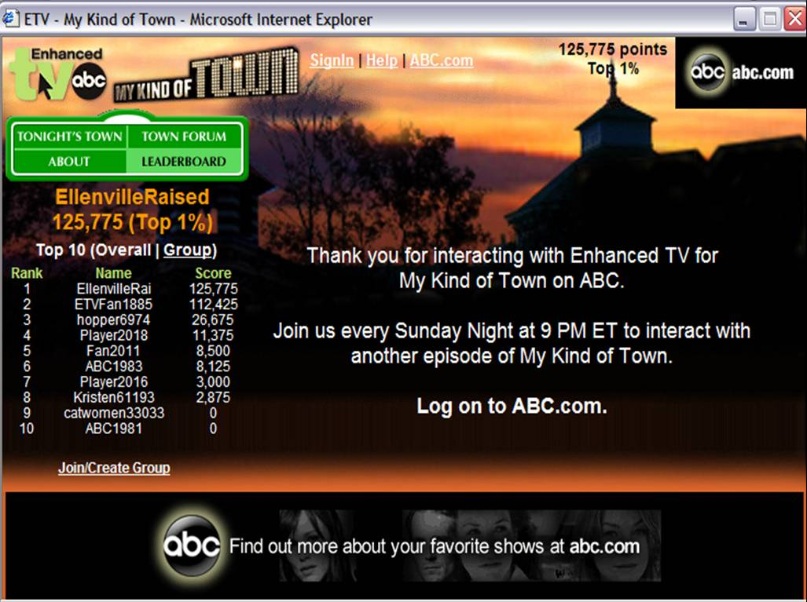

Hello!
I'm Le, and I'm a software engineer.
I'm a software engineer because I enjoy problem solving, happen to have a knack for recognizing patterns, and am lazy enough to want to automate everything.
I have made websites long enough to remember the joys of bubbling events up the DOM tree and having to write different code for different browsers. As my experiences have taken me from back-end to front-end to back-end to front-end, I've also learned enough programming languages to have forgotten more syntax than I remember. Thank goodness for internet search, analytical thinking, and a memory good enough to remember the language I'm currently using.
Recently, I have forayed into the wild, wild world of app development. Working with this relatively new, not-yet-as-standardized-as-web system makes me feel oddly nostalgic and sometimes want to tear my hair out at the same time.
Regardless, learning new things is always exciting. And truly, nothing makes one feel as brilliant as when finally a solving a problem after banging one's head repeatedly on a computer screen. In all seriousness, I did graduate from New York University with honors for a Bachelor's degree in both Math and Computer Science, so I am fully qualified to bang my head as needed.
I'm curious not only to learn more about app dev but also other technologies such as automated translation, augmented reality, virtual reality, game dev, and machine learning.
Working with teams, I've had experience as a team lead and once upon a time had Scrum Master certification.
I am currently working as a freelance developer in quest of work-life balance. Feel free to contact me if you find yourself with development needs, and we'll see if I can help, or at the very least, point you in the right direction.
Since most of my previous work was done in-house, the companies have proprietary right to the code. My GitHub has a couple of sample code repositories that should indicate coding/documentation style for anyone curious enough.
Linked has a more comprehensive list of my work experience, but listed below are some notable projects that I thought were really interesting and fun to work on:
for Borderfree, with a team, from project creation through maintenance & improvement
This product won quite a few company Excellence Awards. The company was acquired, and the product sadly died. It is no longer maintained and only running on a handful of merchants, such as Dune London.
Here's an article about the product from back when it had more merchants:
for Motley Works, as principal architect and developer
Screenshots:
This one's still in pre-beta development. More info is available at the Ghostly website.
for ABC/Disney, with a team, joined for project maintenance & improvement
play games, vote in polls, answer trivia questions, compete to win prizes, and get background informationLostpedia while watching a variety of live ABC broadcasts: e.g., "All My Children", NFL, Oscars

The department had been around a long time before I joined the team. The team even won an Oscar for their work. I came onboard to make the service cross-platform (as it was previously only for IE) and wrote automation scripts for the publication process. Alas, I was there at the end, right before the NY department was shut down. Here's an old wiki reference to show that it existed:
for fun, from project ideation through development & maintenance
This one was simple but time-consuming. It is available at the Chrome web store.
Out of respect for their current availability as well as the privacy of their contact info, please contact me if you would like a current list of references.
A couple of recommendations posted on Linked are included below:
Le is awesome to work with! She's a conscientious worker who gets things done while being a great team player who provides valuable insight and guidance to those around her. She is a sharp coder who learned Scala, NodeJS, and AngularJS in a short amount of time and delivered live, business-critical applications using these technologies. But what really makes her stand out is her attitude towards her job. She always brings enthusiasm towards solving tough problems, and she will often reach out to stakeholders and partners in the organization to develop solutions. Stated simply, Le puts into practice something I have come to believe, that great software is never created in a vacuum; it emerges from the interactions people have when they are trying to solve a problem.
Leanne's star burns bright. Not only is she a very talented UI developer, but an asset to the company in terms of her vibrant personality and ability to bring out the best in people. I would hire her 100 times over.
See Linked for more recommendations.
Email is always best.